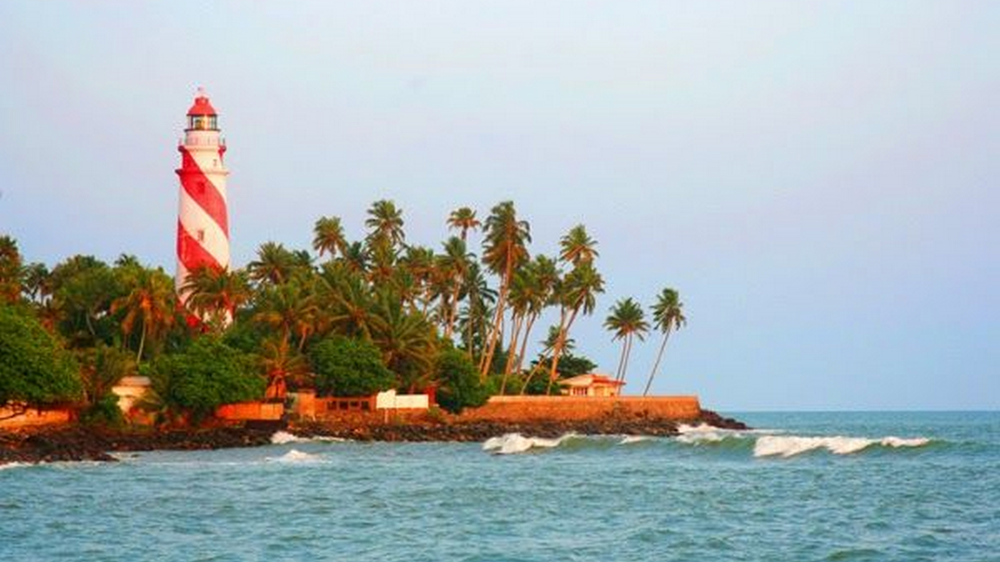
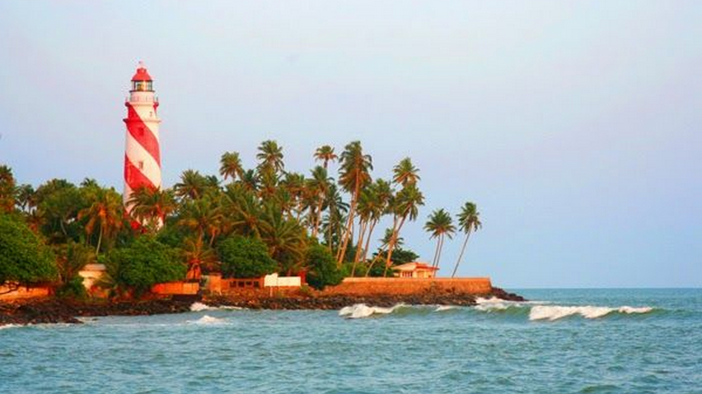

Hotspots

Jatayu Earth's Center
Thangassery Light House
Kollam (erstwhile Quilon) is a southern district of Kerala, located 70 km north of the state’s capital Thiruvananthapuram. It is flanked by the Arabian sea on the west, Tamil Nadu on the east, Alapuzha and Pathanamthitta districts on the north and Thiruvananthapuram district on the south. Housing a population of over 2.6 million, Kollam is one of the more densely peopled districts of India. The head quarters of the district administration is centred at Kollam City, the district’s capital. Administratively, the district is composed of two revenue divisions viz. Kollam and Punalur with three taluks each under them. The heart land of Kollam is naturally veined by the Ashtamudi lake, a massive, multi-branched water body, which is also a popular boating attraction for tourists. This and the Kollam canal cutting through the city give Kollam a place of prominence in the waterway systems of the country. A number of islands of varying sizes beautifully spot the vast expanse of the lake. The city is graced by beaches where people go to spend quiet evenings. Kollam also has a considerably large forest cover on its eastern side making home for several eco tourism projects like Shenduruni, Thenmala, Palaruvi etc.Kollam has been the centre of cashew industry in Kerala from the time of the Portuguese in 16th c. Having hundreds of working cashew factories in the district, Kollam still continues to be the largest processed cashew exporter in India.
Jatayu Earth's Center
Thangassery Light House